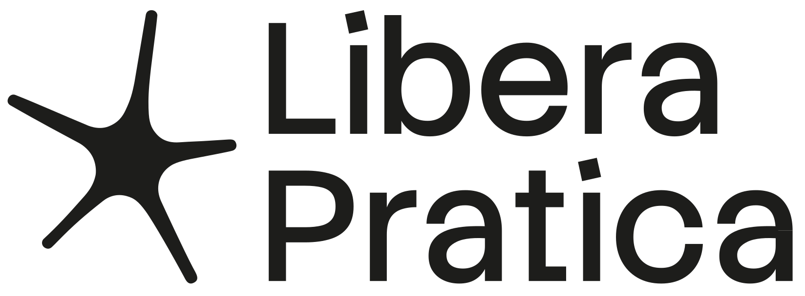
Sabir, cittadino del mondo. Bono viaggio — sei attraccato nel porto di Ancona.
Il tuo sigillo
Ricorda, cittadino del mondo: per essere ammesso ad Ancona dovrai completare tutte le tappe della tua contumacia.
Percorsi vicino a te
Ricorda, cittadino del mondo: le rotte più vicine a te iniziano a un passo.
Spettar e capire — l'attesa raccontata da chi la costruì.
Andara in alto — dal parco al colle, dove la città respira.
Servir il porto — raccontato da chi lo ha disegnato.
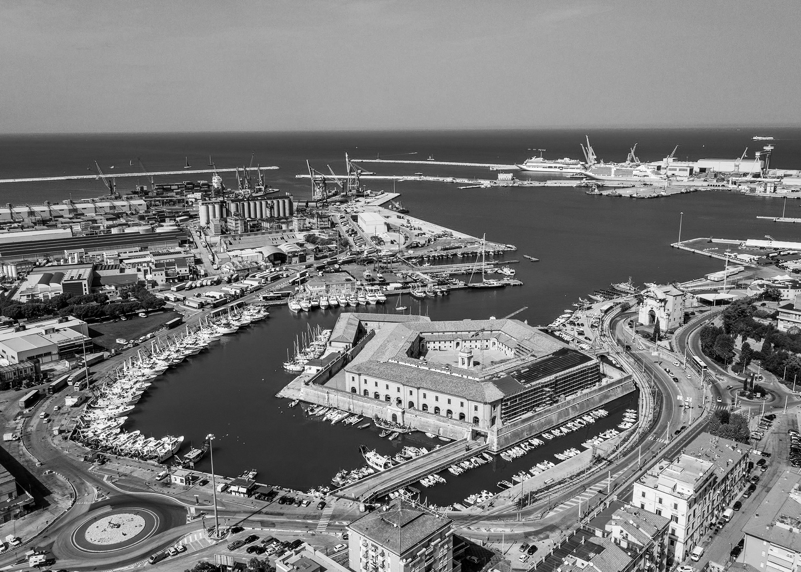
Per essere ammesso, basta attraversare la città — non correrla tutta. Quattro luoghi, quattro anime di Ancona. Il resto è libertà.
Poche rotte, scelte con cura. Ognuna passa dal mare e dal parco.
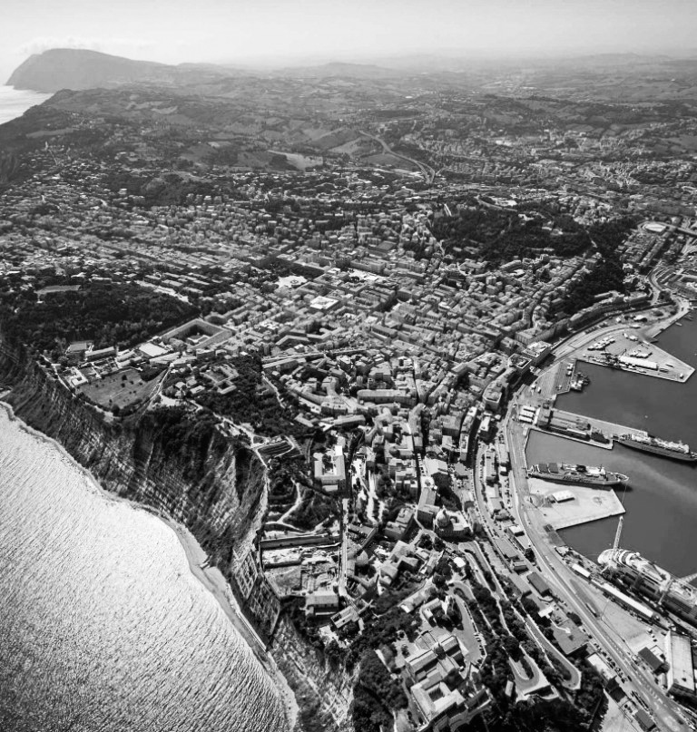
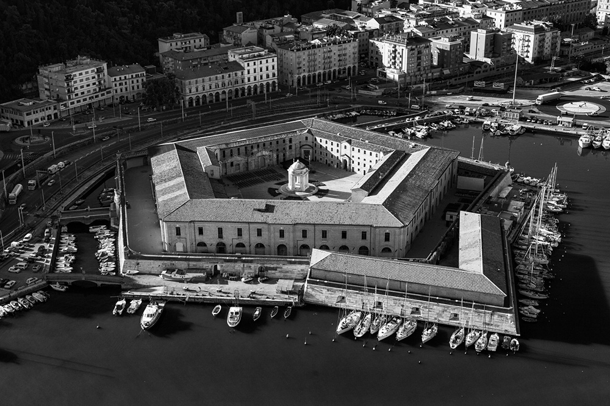
I punti d'attracco per le quattro macro-aree di «Questo Adesso». Mira — guarda dove puoi scendere a terra.
Attracchi registrati
Se non appare automaticamente registra manualmente il tuo attracco inserendo poche e semplici informazioni
Un solo portale. Pacchetti cumulativi per percorso — eventi, luoghi, spostamenti. La Libera Pratica non è mai in vendita.
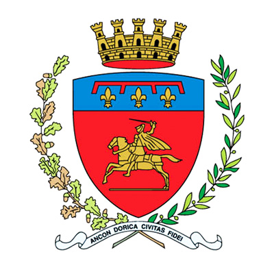
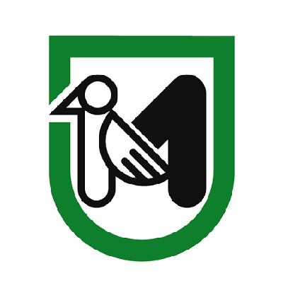
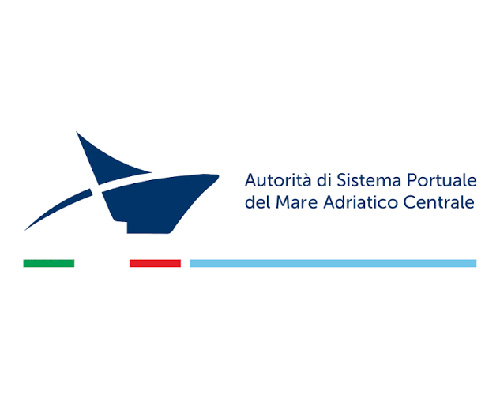
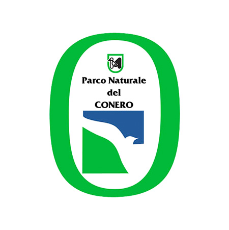
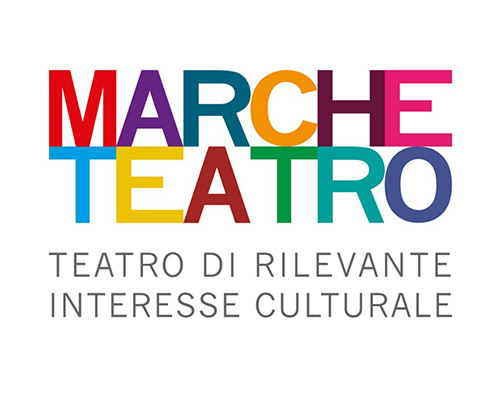
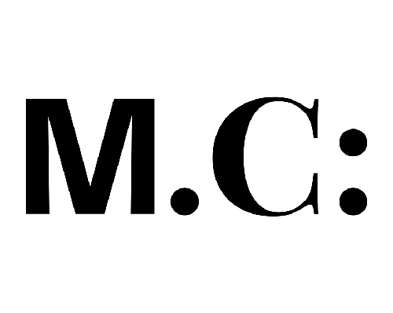
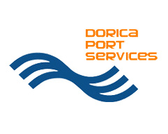
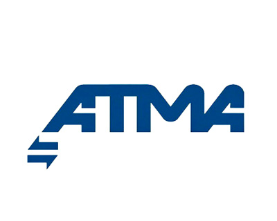
Ancora in contumacia
Completa la soglia minima — un attracco per ciascuna delle quattro macro-aree — per essere ammesso.
Porto di Ancona · MMXXVIII
Rilasciato alla Mole · 14 giugno
Andara in pace, sei di casa.
In quale area hai attraccato?